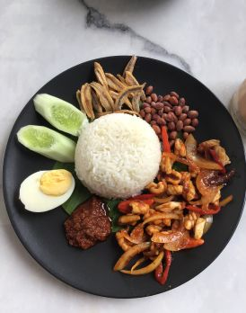

Nasi Lemak Recipe - Malaysia's National Dish
Nasi Lemak Recipe
Malaysia's National Dish

Ingredients
- 2 cups of rice
- 2 cups coconut milk
- 1 pandan leaf (tied into a knot)
- Salt to taste
- Boiled eggs
- Fried anchovies (ikan bills)
- Roasted peanuts
- Sliced cucumber
- Sambal (spicy chili paste)
Procedure
- Rinse the rice until the water runs clear. Drain well.
- In a pot or rice cooker, add rice, coconut milk, pandan leaf, and a pinch of salt.
- Cook the rice as usual until soft and fluffy. Let it rest for a few minutes.
- While the rice is cooking, boil the eggs until fully cooked, then peel and slice them in half.
- Fry the anchovies until crispy and set aside.
- Roast the peanuts in a dry pan until golden and aromatic.
- Slice the cucumbers thinly.
- Prepare or heat the sambal chili paste (can be homemade or store-bought).
- Assemble the plate: scoop a portion of coconut rice in the center, and arrange egg, anchovies,
peanuts, cucumber, and sambal around it.
- Serve warm and enjoy your Nasi Lemak!